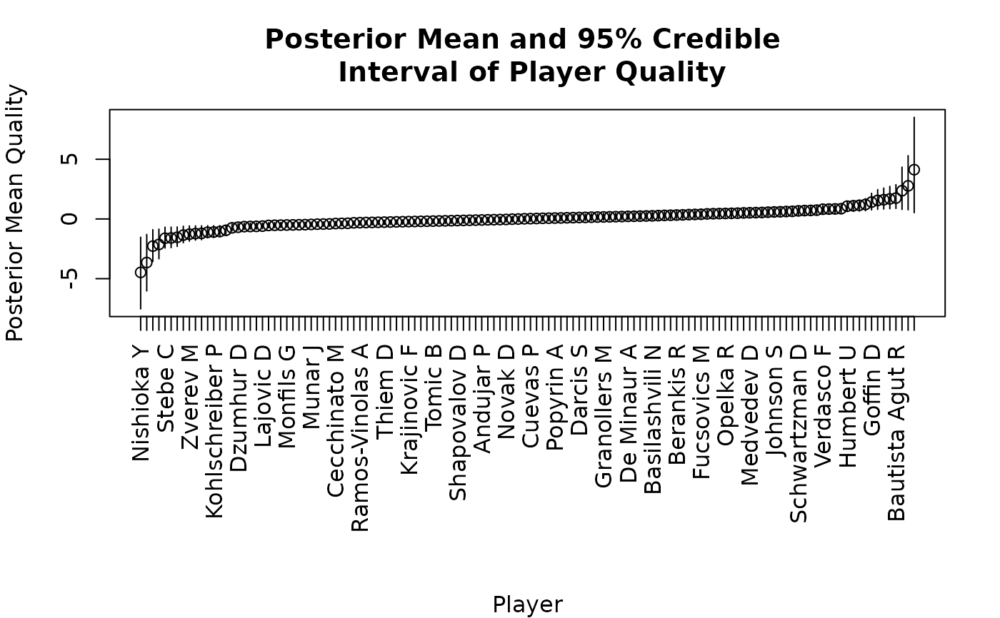

Generates a plot of the posterior mean and 95% credible interval of the quality parameter estimates.
Usage
plot_qualities(
model_output,
player_names,
flip = FALSE,
main = "Posterior Mean and 95% Credible \n Interval of Player Quality",
xlab = "Player",
ylab = "Posterior Mean Quality",
quality_label = NULL,
...
)Arguments
- model_output
The "mcmc" model output object containing the draws.
- player_names
A character vector containing the names of the items (e.g., players or wards).
- flip
Whether to flip the plot to put the quality estimates on the x-axis instead of the y-axis; defaults to FALSE.
- main
The text to use for the plot title.
- xlab
The text to use for the x-axis label.
- ylab
The text to use for the y-axis label.
- quality_label
A vector of three custom labels to use instead of numbers on the quality axis.
- ...
other arguments passed to
plot
Examples
players <- wimbledon$players$name
wimbledonModel <- BBTm(
outcome = wimbledon$matches$outcome,
player2 = wimbledon$matches$loser,
player1 = wimbledon$matches$winner,
advantage = wimbledon$matches$secondWeek,
formula = ~ rank + points,
data = wimbledon$players,
n.iter = 200
)
plot_qualities(model_output = wimbledonModel, player_names = players)

#> item mean lowerCI upperCI
#> lambda[5] Stebe C -4.473643917 -7.5310786708 -1.527189084
#> lambda[63] Jubb P -3.649045854 -6.0293950133 -1.297085311
#> lambda[79] Tipsarevic J -2.272596782 -3.5667701332 -0.895401705
#> lambda[54] Sugita Y -2.132904270 -3.3318111876 -0.850580676
#> lambda[73] Darcis S -1.612620438 -2.4374372877 -0.690423751
#> lambda[18] Arnaboldi A -1.592277586 -2.4027599683 -0.683590073
#> lambda[9] Zverev M -1.534558137 -2.2989788201 -0.666773694
#> lambda[36] Ward J -1.353879092 -1.9921615726 -0.607950341
#> lambda[12] Pospisil V -1.274914308 -1.8553403551 -0.583295378
#> lambda[46] Rubin N -1.225410904 -1.7697904835 -0.574927993
#> lambda[48] Uchiyama Y -1.205068052 -1.7354610605 -0.572872179
#> lambda[6] Bemelmans R -1.114578116 -1.5811915237 -0.566093670
#> lambda[90] Clarke J -1.094235264 -1.5468621006 -0.564037856
#> lambda[14] Kovalik J -1.052346248 -1.4779599780 -0.557100339
#> lambda[3] Giron M -0.950331160 -1.3119549344 -0.520892638
#> lambda[95] Baghdatis M -0.742691050 -0.9981923186 -0.419974476
#> lambda[96] Koepfer D -0.690480194 -0.9302699831 -0.385042225
#> lambda[8] Kwon S -0.640375134 -0.8709428386 -0.356122999
#> lambda[98] Vesely J -0.630654950 -0.8579404107 -0.352821147
#> lambda[42] Caruso S -0.618227315 -0.8408032999 -0.346855882
#> lambda[4] Gojowczyk P -0.597282807 -0.8114617434 -0.338772504
#> lambda[91] Barrere G -0.543266984 -0.7360209554 -0.314007276
#> lambda[43] Istomin D -0.528733553 -0.7162277942 -0.305445174
#> lambda[59] Andreozzi G -0.517208402 -0.7026331328 -0.298180812
#> lambda[35] Monteiro T -0.506886562 -0.6912574822 -0.291435545
#> lambda[39] Schnur B -0.495963066 -0.6787765359 -0.284430731
#> lambda[80] Kudla D -0.486543710 -0.6694001982 -0.278074787
#> lambda[51] Berdych T -0.477124354 -0.6610641943 -0.271718843
#> lambda[22] Majchrzak K -0.457383157 -0.6471594394 -0.257839610
#> lambda[23] Lorenzi P -0.436137822 -0.6296678814 -0.242676394
#> lambda[77] Granollers M -0.425214326 -0.6202047418 -0.234999160
#> lambda[61] Novak D -0.415794970 -0.6143284053 -0.227800054
#> lambda[69] Popyrin A -0.382422827 -0.5826803825 -0.204577101
#> lambda[10] Jaziri M -0.371800159 -0.5724785792 -0.196995493
#> lambda[37] Ramos-Vinolas A -0.361478319 -0.5630718396 -0.189509511
#> lambda[49] Tomic B -0.323292929 -0.5236742750 -0.164756548
#> lambda[52] Ebden M -0.309962810 -0.5090960982 -0.156314309
#> lambda[116] Sandgren T -0.299039314 -0.5003791137 -0.148637075
#> lambda[27] Gunneswaran P -0.289619958 -0.4953518072 -0.139418259
#> lambda[7] Gulbis E -0.278395634 -0.4857061569 -0.124499499
#> lambda[17] Dzumhur D -0.265667171 -0.4719388536 -0.108687404
#> lambda[29] Munar J -0.255646159 -0.4646354521 -0.092008456
#> lambda[103] Fabbiano T -0.243519352 -0.4523299043 -0.077748602
#> lambda[16] Copil M -0.231693372 -0.4407422076 -0.065490569
#> lambda[31] Klahn B -0.221973188 -0.4341794691 -0.052587819
#> lambda[47] Harris L -0.211350520 -0.4254631770 -0.037684915
#> lambda[40] Bedene A -0.199524541 -0.4138754804 -0.023094692
#> lambda[78] Moutet C -0.190105185 -0.4080305930 -0.008016158
#> lambda[55] Dellien H -0.178880861 -0.3978785986 0.006696143
#> lambda[58] Bublik A -0.167355709 -0.3870087531 0.021347405
#> lambda[70] Chardy J -0.157334697 -0.3797281634 0.036303861
#> lambda[68] Karlovic I -0.146712029 -0.3710118714 0.051689503
#> lambda[83] Rublev A -0.132178599 -0.3529635142 0.066561406
#> lambda[57] Andujar P -0.120954275 -0.3428115199 0.082094829
#> lambda[89] Berankis R -0.107924984 -0.3283524186 0.097267423
#> lambda[72] Haase R -0.097903972 -0.3210718288 0.113041399
#> lambda[34] Delbonis F -0.083972197 -0.3044591740 0.128033579
#> lambda[32] Carballes Baena R -0.071243734 -0.2907179239 0.143266311
#> lambda[76] Seppi A -0.060921894 -0.2827194830 0.158980149
#> lambda[110] Tsonga J -0.049998398 -0.2732853398 0.174573710
#> lambda[105] Johnson S -0.040579042 -0.2674404524 0.190467962
#> lambda[114] Sousa J -0.015723771 -0.2413936544 0.221053703
#> lambda[1] Nishioka Y -0.004499447 -0.2312416601 0.236587126
#> lambda[66] Kecmanovic M 0.017253853 -0.1976565430 0.251316188
#> lambda[117] Humbert U 0.028177349 -0.1895191810 0.267638281
#> lambda[124] Querrey S 0.040003329 -0.1813166744 0.283839174
#> lambda[106] Millman J 0.055439243 -0.1670491773 0.299555266
#> lambda[97] Opelka R 0.066362739 -0.1620823331 0.315877359
#> lambda[62] Ruud C 0.076383751 -0.1603252667 0.332320652
#> lambda[112] Evans D 0.086705591 -0.1573404936 0.348723545
#> lambda[24] Londero J 0.099133226 -0.1481727926 0.364890556
#> lambda[71] Mayer L 0.110056722 -0.1421314395 0.381447671
#> lambda[119] Kukushkin M 0.122484357 -0.1329637385 0.397858726
#> lambda[13] Kohlschreiber P 0.131903714 -0.1301123968 0.414561902
#> lambda[26] Klizan M 0.146737972 -0.1163350699 0.430739259
#> lambda[87] Norrie C 0.159767263 -0.1062344650 0.447091889
#> lambda[75] Lopez F 0.169788275 -0.1022617303 0.463736641
#> lambda[11] Jarry N 0.180110115 -0.0976762085 0.480364982
#> lambda[45] Krajinovic F 0.191936095 -0.0900267517 0.496947979
#> lambda[93] Fucsovics M 0.201957107 -0.0860540170 0.513668818
#> lambda[19] Carreno Busta P 0.217393021 -0.0710511160 0.530955812
#> lambda[28] Dimitrov G 0.227414033 -0.0670783812 0.548198020
#> lambda[102] Hurkacz H 0.238939185 -0.0600417114 0.565565748
#> lambda[64] Gasquet R 0.250163509 -0.0536178286 0.582908371
#> lambda[30] Sonego L 0.261087004 -0.0478067329 0.600225891
#> lambda[65] Cuevas P 0.280433682 -0.0266042212 0.618246316
#> lambda[38] Thompson J 0.300081187 -0.0070730272 0.636291846
#> lambda[94] Kyrgios N 0.311907167 -0.0008467819 0.653684677
#> lambda[60] Mannarino A 0.327643909 0.0120319377 0.671403857
#> lambda[33] Cecchinato M 0.342778996 0.0238871998 0.689072830
#> lambda[50] Albot R 0.364532296 0.0470004953 0.707294085
#> lambda[2] Herbert P 0.379065727 0.0578322998 0.724912850
#> lambda[56] Tiafoe F 0.393599158 0.0686641042 0.742531615
#> lambda[113] Verdasco F 0.425580608 0.1091761787 0.761606400
#> lambda[21] Lajovic D 0.439813210 0.1194962544 0.779200061
#> lambda[82] Djere L 0.450435878 0.1236755846 0.796492477
#> lambda[44] Garin C 0.461058546 0.1278549147 0.813784893
#> lambda[108] Struff J 0.472282870 0.1330577025 0.831127516
#> lambda[115] Paire B 0.485612989 0.1418425918 0.848645866
#> lambda[84] Fritz T 0.507667118 0.1654676161 0.866892226
#> lambda[74] Edmund K 0.518590613 0.1701586750 0.884209746
#> lambda[81] De Minaur A 0.529514109 0.1748497340 0.901527265
#> lambda[111] Pouille L 0.541941744 0.1820994369 0.918950519
#> lambda[53] Shapovalov D 0.566402496 0.2015616108 0.935381411
#> lambda[122] Pella G 0.587854969 0.2175397760 0.952679050
#> lambda[92] Simon G 0.601786744 0.2251437237 0.969937036
#> lambda[109] Schwartzman D 0.623239217 0.2411218888 0.987401623
#> lambda[121] Goffin D 0.640179271 0.2520755235 1.004979456
#> lambda[125] Bautista Agut R 0.676673139 0.2848021234 1.033191925
#> lambda[104] Auger-Aliassime F 0.702337203 0.3054698503 1.051567898
#> lambda[120] Berrettini M 0.715065666 0.3117339233 1.069100366
#> lambda[67] Wawrinka S 0.739526418 0.3310617753 1.089784183
#> lambda[88] Cilic M 0.816632055 0.4481543022 1.126359429
#> lambda[118] Raonic M 0.827555551 0.4533862617 1.142873794
#> lambda[85] Basilashvili N 0.841487326 0.4614243223 1.161335623
#> lambda[25] Monfils G 0.858427380 0.4722684840 1.181798840
#> lambda[101] Medvedev D 1.069795958 0.6179820155 1.449253174
#> lambda[86] Isner J 1.106289826 0.6360176199 1.508836707
#> lambda[107] Fognini F 1.146186493 0.6578136884 1.567051278
#> lambda[99] Khachanov K 1.214267292 0.6894755630 1.697152916
#> lambda[100] Anderson K 1.413208235 0.7572672785 2.149265862
#> lambda[123] Nishikori K 1.551983595 0.8055854050 2.458226111
#> lambda[15] Tsitsipas S 1.614047836 0.8295189959 2.590008681
#> lambda[20] Zverev A 1.680624496 0.8548869713 2.729074160
#> lambda[41] Thiem D 1.747201156 0.8802549466 2.873331218
#> lambda[127] Federer R 2.365797040 0.7988807639 4.343798203
#> lambda[126] Nadal R 2.773813383 0.7642140429 5.300795878
#> lambda[128] Djokovic N 4.127933519 0.5259898685 8.515435454